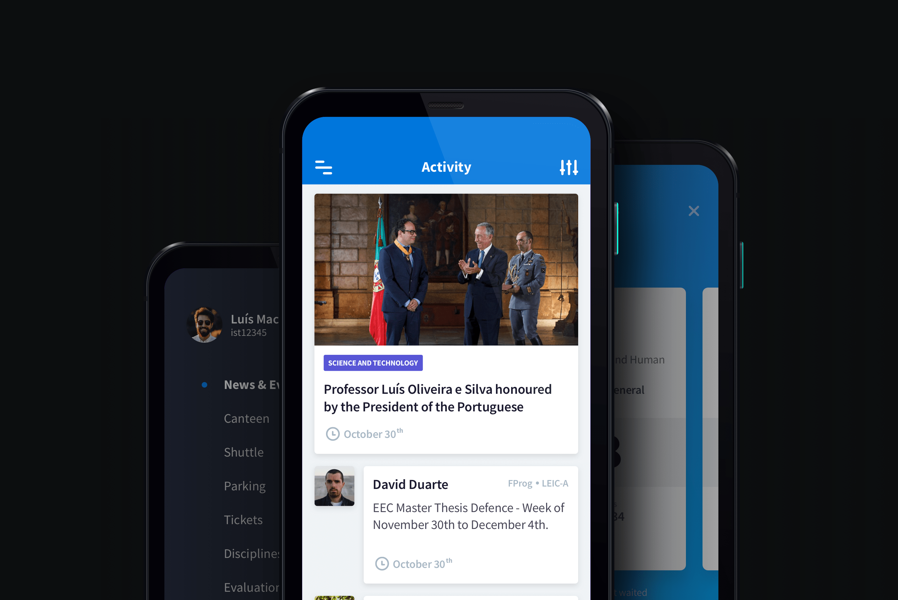
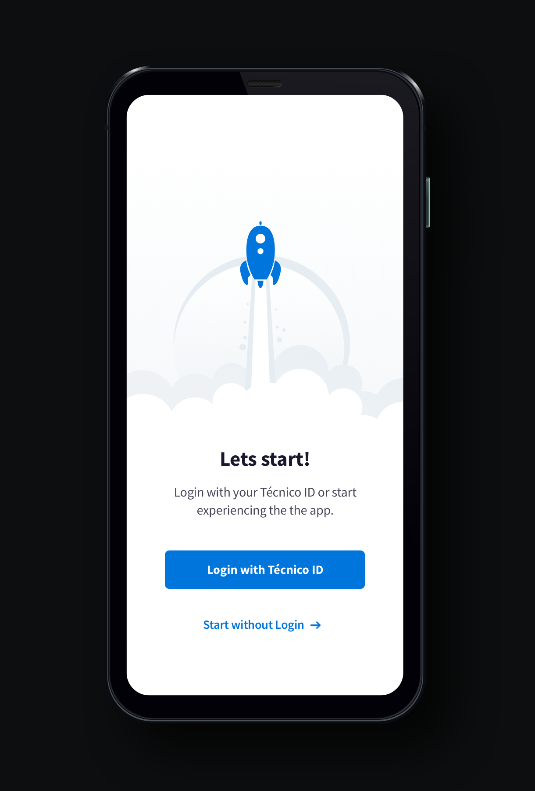
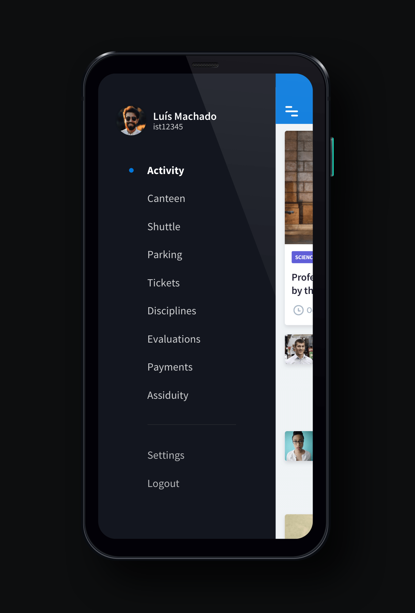
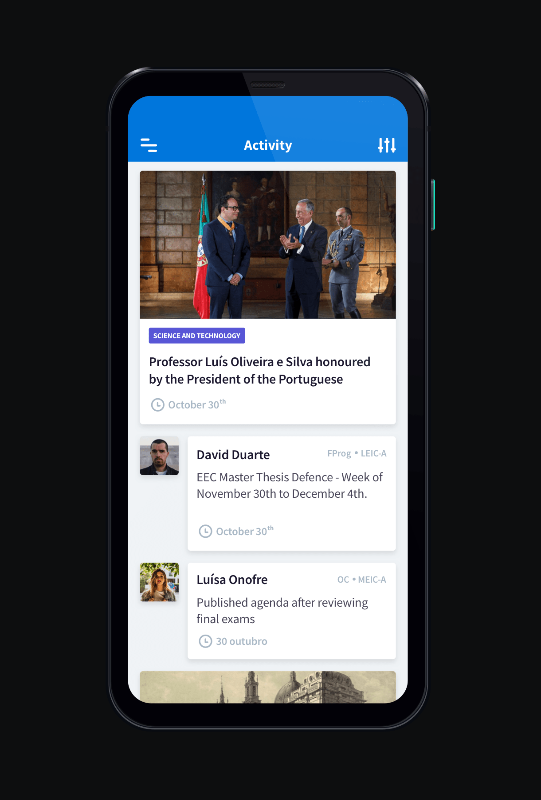
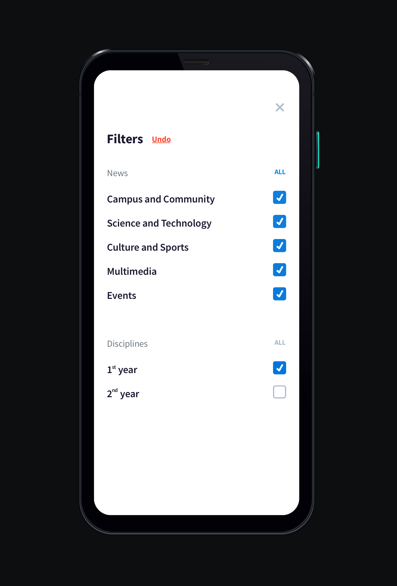

Sandro Fernandes
Técnico Mobile.

Details.
Técnico Mobile is the mobile app of the top school of Architecture, Engineering, Science and Technology in Portugal, involving a community of more than 10,000 people.
The app allows to access a range of multiple types of information, from the latest news and events of the community, to classes and exame schedules, shuttle bus itineraries, canteen menus and many others.
The main challenge was to gather a big amount of information that was spread across a range of different services, while creating a simple and uniform experience. The app also reflected an higher effort on building a visual design language shared with various other projects of the school.
Roles: User Experience, User Interface Design



